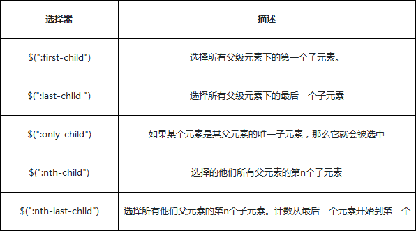
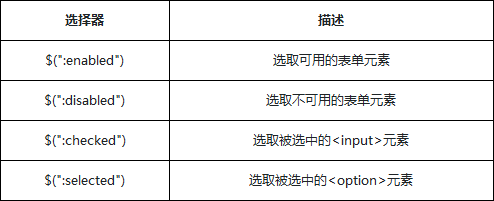

jQuery
初始jQuery
简单的jQ语句
$(document).ready(function() {
$("div").html("这是文字！");
});
代码分析：
$(document).ready 的意思是等页面的文档（document）中的节点都加载完毕后再执行后续的代码。
$("div").html("这是文字！");的意思是在DIV中插入文字
jQuery对象与DOM对象
jQuery对象与DOM对象是不一样的
简单的例子:
HTML代码：
<p id="id"></p>
我们要获取页面上这个id为id的div元素，然后给这个文本节点增加一段文字并且文字颜色变成红色。
JavaScript处理方式：
var p = document.getElementById('id');
p.innerHTML = '这是文字！';
p.style.color = 'red';
代码分析：
通过原生DOM模型提供的document.getElementById(“id”) 方法获取的DOM元素就是DOM对象
通过DOM方法将自己的innerHTML与style属性处理文本与颜色。
jQuery处理方式：
var $p = $('#id');
$p.html('这是文字！').css('color','red');
代码分析：
通过$('#id')方法会得到一个$p的jQuery对象，
$p是一个类数组的对象这个对象里面其实是包含了DOM对象的信息的然后封装了很多操作方法，
调用自己的方法html与css处理，得到的效果与标准的JavaScript处理结果是一致的。
通过标准的JavaScript操作DOM与jQuyer操作DOM的对比，我们不难发现：
1、通过jQuery方法包装后的对象，是jQuery对象，它是一个新的对象
2、jQuery与DOM对象完全不是同一个东西，但是又似曾相似，因为他们都能处理DOM
3、通过jQuery处理DOM的操作，可以让开发者更专注业务逻辑的开发，而不需要我们具体知道哪个
DOM节点有那些方法，也不需要关心不同浏览器的兼容问题，我们可以通过jQuery更友好的API进行
开发，同时代码也会更加精短
jQuery对象转化成DOM对象
jQuery是一个类数组对象，DOM对象就是一个单独的DOM元素。
利用数组下标的方式读取到jQuery中的DOM对象
HTML代码：
<div>元素一</div>
<div>元素二</div>
JavaScript代码：
var $div = $('div') //jQuery对象
var div = $div[0] //转化成DOM对象
div.style.color = 'red' //操作dom对象的属性
代码分析:
用jQuery找到所有的div元素（3个），因为jQuery 对象也是一个数组结构，可以通过数组下标索
引找到第一个div元素，通过返回的div对象然后调用它style属性然修改第一个div元素的颜色。
这里需要注意的一点是，数组的索引是从0开始的，也就是第一个元素下标是0
jQuery代码：
var $div = $('div') //jQuery对象
var div = $div.get(0) //通过get方法，转化成DOM对象
div.style.color = 'red' //操作dom对象的属性
代码分析：
jQuery对象自身提供一个.get() 方法允许我们直接访问jQuery对象中相关的DOM节点，
get方法就是利用的第一种方式处理的，只是包装成一个get让开发者更直接方便的使用。
DOM对象转化成jQuery对象
如果传递给$(DOM)函数的参数是一个DOM对象，jQuery方法会把这个DOM对象给包装成一个新的jQuery对象。
通过$(dom)方法将普通的dom对象加工成jQuery对象之后，我们就可以调用jQuery的方法了
HTML代码：
<div>元素一</div>
<div>元素二</div>
JavaScript代码：
var div = document.getElementsByTagName('div'); //dom对象
var $div = $(div); //jQuery对象
var $first = $div.first(); //找到第一个div元素，first第一个
$first.css('color', 'red'); //给第一个元素设置颜色
代码分析：
通过getElementsByTagName获取到所有div节点的元素，结果是一个dom合集对象，不过这个
对象是一个数组合集(3个div元素)。通过$(div)方法转化成jQuery对象，通过调用jQuery对
象中的first与css方法查找第一个元素并且改变其颜色。
jQuery选择器
ID选择器
一个用来查找的ID，即元素的id属性
$( "#id" ) id是唯一的，每个id值在一个页面中只能使用一次。如果多个元素分配了相同的id，将只匹配该id 选择集合的第一个DOM元素。但这种行为不应该发生;有超过一个元素的页面使用相同的id是无效的
类选择器
通过class样式类名来获取节点
$( ".class" ) 类选择器，相对id选择器来说，效率相对会低一点，但是优势就是可以多选
元素选择器
根据给定（html）标记名称选择所有的元素
$( "element" ) element指元素的名称，获取此名称的所有元素
全选择器（*选择器）
通配符*意味着所有的元素，jQuery也可以通过传递*选择器来选中文档页面中的元素
$( "*" ) 获取文档中所有的元素
层级选择器
子元素 后代元素 兄弟元素 相邻元素
通过一个列表，对比层级选择器的区别:仔细观察层级选择器之间还是有很多相似与不同点 1、层级选择器都有一个参考节点 2、后代选择器包含子选择器的选择的内容 3、一般兄弟选择器包含相邻兄弟选择的内容 4、相邻兄弟选择器和一般兄弟选择器所选择到的元素，必须在同一个父元素下
基本筛选选择器
筛选选择器的用法与CSS中的伪元素相似，选择器用冒号“：”开头
通过一个列表看基本筛选器的描述： eq:在匹配的集合中选择索引值为index的元素
内容筛选选择器
通过内容来过滤，其规则会体现在它所包含的子元素或者文本内容上
内容过滤器描述如下表： 注意事项： 1、:contains与:has都有查找的意思，但是contains查找包含“指定文本”的元素，has查找包含 “指定元素”的元素 2、如果:contains匹配的文本包含在元素的子元素中，同样认为是符合条件的。 3、:parent与:empty是相反的，两者所涉及的子元素，包括文本节点
可见性筛选选择器
jQuery根据元素的状态扩展了可见性筛选选择器:visible与:hidden
描述如下：:hidden选择器，不仅仅包含样式是display="none"的元素，还包括隐藏表单、visibility等等
属性筛选选择器
让你可以基于属性来定位一个元素。
描述如下：
子元素筛选选择器
不常使用，其筛选规则比起其它的选择器稍微要复杂点
描述如下： 
表单元素选择器
无论是提交还是传递数据，表单元素在动态交互页面的作用是非常重要的。
除了$(':input')其他用法都是$('input:选择器')
描述如下：
 注意事项：
除了input筛选选择器，几乎每个表单类别筛选器都对应一个input元素的type值。大部分表单类别筛选器
可以使用属性筛选器替换。比如 $(':password') == $('[type=password]')
注意事项：
除了input筛选选择器，几乎每个表单类别筛选器都对应一个input元素的type值。大部分表单类别筛选器
可以使用属性筛选器替换。比如 $(':password') == $('[type=password]')
表单对象属性筛选选择器
专门针对表单元素的选择器，可以附加在其他选择器的后面，主要功能是对所选择的表单元素进行筛选
描述如下：  注意事项： 选择器适用于复选框和单选框，对于下拉框元素, 使用 :selected 选择器 在某些浏览器中，选择器:checked可能会错误选取到<option>元素，所以保险起见换用选择器input:checked ，确保只会选取<input>元素
jQuery的属性与样式
.attr()与.removeAttr()
获得内容 - text()、html() 以及 val()
三个简单实用的用于 DOM 操作的 jQuery 方法:
- text() - 设置或返回所选元素的文本内容
$("#点击事件的ID").click(function(){
alert("Text: " + $("#显示的标签ID").text());
});
$("#点击事件的ID").click(function(){
alert("HTML: " + $("#显示的标签ID").html());
});
$("#点击事件的ID").click(function(){
alert("Value: " + $("#input的ID").val());
});
$("点击事件的ID").click(function(){
alert($("#标签ID").attr("标签的属性名称"));
});